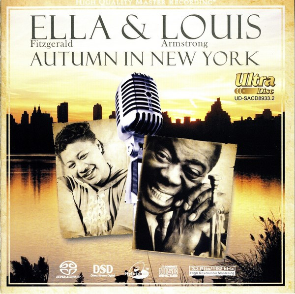

SACD
Autumn In New York
Ella Fitzgerald & Louis Armstrong
Media: NM · Sleeve: NM
CA$60.00
Sold
Discogs SuggestedCA$93.03
Discogs MedianCA$93.03
Discogs HighCA$93.03
- Physical Copy ID
- BB-SACD-065
- Year
- 2008
- Label
- Top Music International Ltd.
- Catalog #
- UD-SACD8933.2
- Country
- GBUK
- Genre / Style
- Jazz · Big Band, Latin Jazz, Swing, Vocal